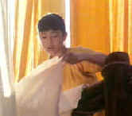
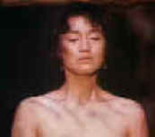
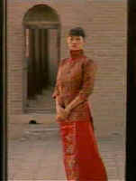
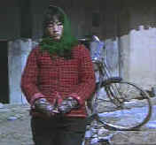
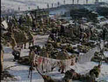
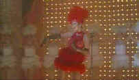

The Exquisite Muse of Zhang Yimou
By Stu Kobak
One of the most exciting experiences for a film lover is discovering
a major new talent. Sharing your discovery amplifies the experience. In China, during the
last decade, a directing cadre of visual stylists have blossomed despite the usually
oppressive artistic atmosphere. Though he has shared the limelight with his compatriot
director Chen Kaige, Zhang Yimou has produced the most intensely passionate films this
side of cineaste Nirvana.
Beginning with Red Sorghum(1987), Zhang’s first directing effort,
the cinematographer turned director has benefited from glorious Gong Li as his star. Not
that this has been an unequal partnership. Experience any of Zhang’s films and you
will quickly understand how the director makes love to his star with the camera. All of
Zhang Yimou’s films feature astounding camera command coupled with exquisite set
design. Whether spying on the passions of forbidden love amidst the blazing colors of a
dye factory in Ju Dou or documenting a simple peasant woman’s the search for justice
in The Story of Qiu Ju, the films of Zhang are visual feasts.
Ju Dou(1989)was the first Zhang film I had the pleasure of
watching. The director takes the Hollywood noir concept and stamps it with his own
astounding visual explosiveness.
 |
Gong Li at the dye factory in Ju Dou© Pioneer |
You could can easily see the comparisons between Ju Dou and
Hollywood’s The Postman Always Rings Twice. There is a clear line of heritage in the
storytelling. But while the typical noir film uses black and white images, shadows and hi
key lighting to provide a dramatic visual fabric, Zhang works with startling color to
convey embellish emotion. And there is an abundance of emotion on display within the
restrictive confines of the rural Chinese dye factory in this story of passion set in the
1920's.
Jinshan, the aging and childless
owner of the dye factory, enters into marriage with a beautiful young woman hoping to
produce an heir. Instead, he releases a stream of lava flow from a volcano of sexual
passion that must explode between his younger nephew and his unfulfilled wife. The
resultant screen sensuality is intense.
Gong Li is perfection itself in the role of Ju
Dou. You can feel
her blood flow hot with passion under the hot lens of Zhang’s camera. This exquisite
actress combines innocence and beauty with a desperate practicality as the linchpin to the
unusual triangle. Li Baotian plays her lover with a strangely affecting combination of
restraint, fear and hunger. All of the actors seem a natural part of this world.
 |
| Passions ablaze in Ju Dou. ©Miramax |
Ju Dou stands as a testament to
the masterful camera vocabulary of the director. Though compromised significantly by a
cropped laser disc transfer, the compositions of the simple mechanical structures of the
traditional dye factory make fascinating subject matter for the camera. Many of the erotic
scenes unravel in these close quarters as Zhang’s camera records the passion with
consummate power. Just as he uses color to enhance the sexual intensity, the sudden
release of bolts of fabric from their rolls provides added impact as lovers embrace. This
is one of the most visually powerful films I can recall seeing.
There are many unexpected turns to the script. The film is at
times a romance, a thriller, a chiller and even comes close to the supernatural as the
eerie chords of Xia Ru-jin's musical score reverberate through the rafters of the wooden
structure where this tragic tale unfolds. The many startling images will stay with you
long after the film's fiery finish.
Ju Dou is available on laser disc a very sharp transfer, with the
intense bolts of color clean and stable. There is an absence of grain in the picture. The
surround sound is involving, while not overly aggressive. There are no chapter stops and a
repressing in the proper 2.35 Panavision aspect ratio is certainly in order.
After watching
Ju Dou three
or four times, I couldn’t wait to see Zhang Yimou’s next film, the
internationally acclaimed Raise the Red Lantern1991). Like Ju
Dou, this film was nominated
for an Academy Award as Best Foreign film Both films suffered the same initial reception
from Chinese officials, banning in their native land. It is likely that Ju Dou was too
sexually explicit for the Chinese censors, though a case can be made for political
allegory in its content. Raise the Red Lantern, however, comes from a much colder point of
view.
 |
Gong Li: fire and ice in Raise the Red Lantern©Orion |
Once again, it is Gong Li who is
the chief focus of Zhang’s camera. Gong Li is a remarkable actress who's finely
painted face can call on a wide range of emotion. Zhang's lingering close-ups of the
actress combine the power of his lens with her remarkable talent. This time the setting
has changed from rural China to the more formal and sophisticated domain of China’s
wealthy. As the reluctant newly installed fourth concubine of a rich man, Songlian, Gong
Li and director Zhang create the portrait of a strong woman battling the traditional place
of female subservience in Chinese culture.
When Songlian enters the rigid 1920s household, a crimson
concubine armed with beauty and defiance, a struggle for power erupts between the
concubines. While the youthful Songlian tries desperately to bend the traditions governing
this world, the weight of centuries is too powerful a force.
As the three youngest wives strive for dominance over this female
preserve, Zhang’s camera closes on each woman watchfully, penetrating through the
stiff gowns and stylized make-up, examining the underlying deceptions and isolating his
focus on the internecine machinations that traverse the courtyards linking the residences
of the concubines.
Zhang’s camera is extremely formal is his compositions for
Raise the Red Lantern. The camera moves in languid, elegant examination of the
architecture and appointments of this rich man’s world. There is a rigidity to the
framing, unfortunately crippled by the cropping on this laserdisc from the original
Panavision 2.35 aspect ratio. The carefully balanced pictures reinforce the sense of order
in the Chinese culture being examined. Color and sound mingle to produce additional
tension. All the elements at the Director's command are used masterfully.
Raise the Red Lantern may suffer from cropping, but it is still a
beautiful laserdisc to watch. Colors have been captured handsomely and most compositions
are not evidently marred. The delicate lighting survives well in this transfer from Image
Entertainment. The sound is wonderfully evocative of the period; not just the music, but
the sounds of the courtyard, the massive doors closing, even the extinguishing of the
lanterns, are all integrated powerfully for fine effect. Although there are 22 chapters
encoded on the disc, they are not listed on the jacket, subverting their usefulness.
Ask me to sit down and view any of
his films again and you'll get a quick, unequivocal, delighted assent. More than anything,
I think it is Zhang's sense of space and color that is captured in all his films which
casts its spell over me. With The Story of Qiu Ju(1992) , the director takes his first
cinematic look at contemporary China.
This is a tale set in the provincial villages and cities of
modern China in which the family and structure have been reshaped by four decades of
communist rule. A young pregnant peasant seeks justice for the affront of the village
chieftain against her husband. There is no malice is her relentless pursuit of what is
right. She is painted in beautiful, muted colors by the very glamorous Gong Li playing
brilliantly against type. Qiu Ju is forced to take her quest for right up every level of
the bureaucratic ladder until she is painfully rewarded by a reality that subverts the
measure of her justice with its ironic timing.
 |
| Gong Li as a pregnant peasant in The Story of Qiu Ju ©Sony |
The plot synopsis may not sound
scintillating, but the film is completely engaging; a patchwork quilt of insightful detail
that adds up to vivid picture of Chinese life. The brilliant signature photography of
Zhang commands the screen frame by frame. The dried red peppers hanging against the eaves
of Qiu Ju’s village home are spectacular splashes of color against the bland peasant
dress and dull fall/winter landscape. Qiu Ju's journeys on her quest for justice are
captured by the beautiful long lens of Zhang, while many of the city scenes are recorded
by Zhang with the use of hidden cameras. The details of the city are as fresh to Qiu Ju as
they are to Western viewers, each stop frame a feast of color and composition.
The Story of Qiu Ju is the first film for which Zhang abandoned
the anamorphic lens. Shot spherical and likely composed for a 1.66 aspect ratio, the
laserdisc suffers less from cropping than other of Zhang’s films. The images are
sharp and the color controlled yet intense. Maybe the color of the hanging chilies is not
quite the same bright red that reflected off the theater screen, but it is close. The
detail of surround elements is excellent as is the musical score. The disc has not been
provided with chapter stops.
After the simplicity and
direct approach used by Zhang in The Story of Qiu Ju, the director took on a sweeping saga
of To Live(1994)depicting the hardship of accommodating to the unpredictable winds of
modern Chinese political climate. Though the film depicts the upheaval of China, it
examines the history by concentrating on the intimate moments of life, maintaining a less
formalized, naturalistic style that stitches together the often frayed threads which make
up the chaotic universe of To Live.
 |
| A sweeping battle scene from To Live ©Hallmark |
Zhang’s film benefits from
two stirring lead performances from Ge You and Gong Li as the husband and wife who find a
path for survival. Ge, who played the slithery Master Yuan in Chen Kaige’s
Farewell,
My Concubine, undergoes remarkable change through the decades. Gong Li, once again turns
in an fantastic for director Zhang. Somehow, despite her great beauty, Gong manages to fit
the role of this very plain woman perfectly. The film may be a bumpy emotional trip, but
riding the revolutionary storm with these wonderful film artists is well worth the jolts.
The striking honesty of this film earned Zhang more severe criticism from officials,
preventing its showing on the mainland.
There are beautifully shot night scenes of Ge’s performing
puppet shows that transfer wonderfully to laser. The color palette is not as rich as some
other Zhang films, but the laser is accurate in their reproduction. I found the sound very
satisfying. The detailed timbre of the instruments often had a feeling of floating in the
room. To Live is a fabulous film and not to be missed. The film transfer appears cropped
from a 1.85 aspect ratio, though the end credits do indicate "Filmed in
Panavision."
Zhang’s last U.S. release,
Shanghai Triad(1995), is again a departure for the artist, playing more like a
Warner’s 1940’s gangster melodrama than a studied examination of mores and
political matter. It is even shot differently than any of Zhang’s previous films,
much of it lensed through filters, creating a nostalgic look for 1930’s Shanghai
A young boy, Shuisheng, comes to Shanghai to work for the family
gang. He is given to Bijou, the boss’s moll, as a personal servant. The perspectives
in Shanghai Triad are all through the boys eyes. This is Zhang’s vision of lost
innocence as the boy witnesses a ruthless fight for the control of the mob which
eventually entangles the beautiful Bijou.
 |
| Dance Hall girl Gong Li. ©Sony |
Bijou is played with chilling
aplomb by glorious Gong Li. As Shanghai’s popular chanteuse, Li wiggles her way
through some entertaining cabaret numbers, juggles her lovers, and moves through the film
with imperial swagger. By the time her icy veneer begins to melt, it is clearly too late
for her redemption.
Shanghai Triad, released on laserdisc by Columbia-Tristar in 1.85
is the first of Zhang’s films to be presented in its proper aspect ratio. The grainy
nature of the source material is reflected in the accurate transfer. The material is
sharp, but colors are somewhat desaturated, a minor disappointment. The stereo mix is
quite appealing.
Zhang’s Muse for virtually his entire directing career has
been the incandescent actress Gong Li. Li has starred in each one of the director’s
films, and they also maintained a live-in relationship off the screen, though the couple
recently parted company. Shanghai Triad will likely be the last film of this fertile
screen relationship. It is interesting to speculate what impact the loss of Gong Li will
have on Yimou’s future films, emotionally and otherwise.

Selections from the feature archive
include articles on
Akira Kurosawa, Frank
Darabont, Blonde
Bimbos, Hollywood
Street Gangs, or Vietnam:
The Hollywood Pariah, and many more...
.
Catch the Hollywood take on
Blonde Bimbos by clicking on the image above.

The Movie Poster Archive includes extensive poster images from the films of stars like Susan Hayward, Kirk Douglas, Katharine Hepburn and many more. Our featured star is Doris Day.


Specializing in DVD Collector's
Editions, this new site is just starting to build its review
database. Check out reviews of the trio of Kevin Smith specials.

Now a major independent DVD distributor, Image
has parlayed its laser disc business to success. Great DVD
release calendar info.

First Run Features
boasts a library of independent and foreign features available on
DVD and VHS. Check out their web site for catalog details.
The Movie Review Query Engine is a terrific tool for finding more than 160,000 reviews on more than 20,000 titles.

DVDinsider is
a daily email publication targeting the DVD Industry
Professional. The publication includes current news, events,
stock prices and more.
They may
be judgmental, but that's the point, isn't it. Lots of DVD reviews
plus news and more.
Click on the link to visit the judge's chambers.

The Digital Ring
has DVD reviews and theatrical release reviews as well. Check
out their DVD site of the month feature.
Home Theater Reference Reviewing System
When you read a DVD review it's of utmost importance to know what equipment is being used to evaluate quality. Click on the projectors to find out more.